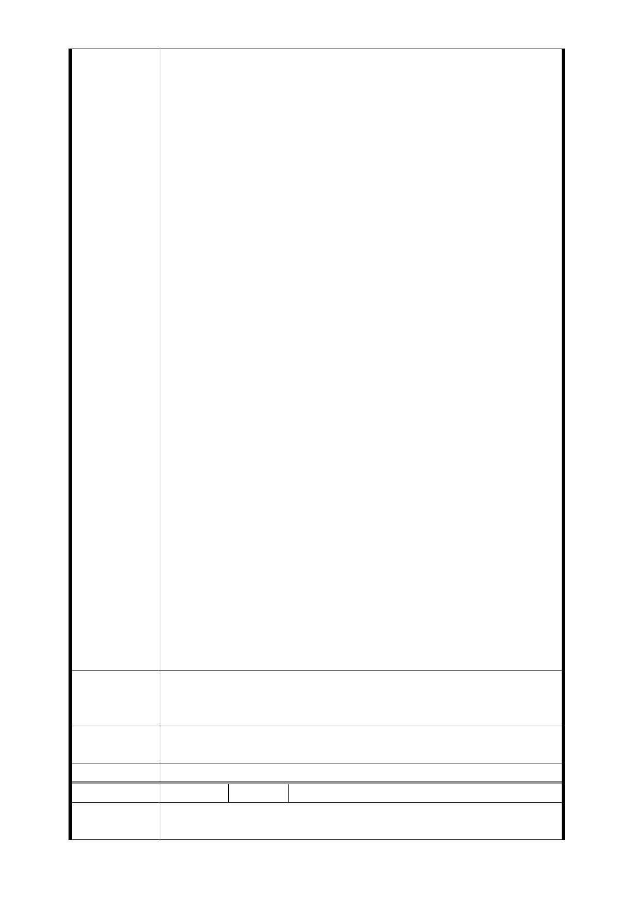

此世居 5-60 年，政府棄最適合作出入口之南海路段上左右兩
角落之南昌派出所（公有土地及旁邊民宅也是 5-60 年之老建
築）及南門市場（政府公有土地已逾 30 年之建築，待萬大線
開工時也將屆 40 年面臨改建），而強行徵收私有土地參與聯
開，嚴重損及土地所有權人權益，實有違平等原則。
2.整條南海路段就屬南昌路到羅斯福路之間為精華路段（商
二區），捷運局欲將此精華路段因不必要之必要而劃為捷運之
出入口，真是有其必要性嗎？此設計明顯有誤。
3.政府推動公共建設應優先考慮公有土地或公有機關，人民
的私有財產應受到法律最大的保護，捷運局卻反向操作，欲
徵收人民私有財產之精華路段做為通風口，未來是否再變更
使用目的呢？若是，則令人有圖利財團之嫌疑。
4.出入口之設置，依第一次都委會委員們也討論過，並不見
得非在捷運站體旁邊，只要有聯通道路過去即可，如中正紀
念堂站通往中正紀念堂正是如此，另日本地下鐵出入口也不
一定就在捷運站體旁邊，可拉出去在外面，就不致需要用到
南海路 8-16 號之土地。
5.另捷運局聲稱因南門市場 264 個攤商反對，又無法找到適
當安置攤商的地方，致不使用已有 30 年的南門市場，請問臺
北市政府是地主，攤商只是租用公地，現公地有重大工程要
改建，就因租戶反對，而反過來徵收具有正當合法性的人民
財產，其公平正義在哪裡？居住正義在哪裡？政府此舉是否
以多數欺負少數幾戶人民財產？
6.捷運局又言南門市場的公家機構眾多搬遷不易，因而要強
徵民宅，罔顧人民權益，在民主法治國家下，人民身家財產
應該受到憲法的保障不容任何侵犯。
7.南門市場地下已有二條捷運線，未來萬大線應整體開發為
三條捷運在地下轉乘，LG01 站體應該規劃在南門市場下比較
符合經濟效益。又此為重要區域，很多事應一次規劃建設完
成比較節省經費，也比較環保，政府不該只圖謀人民私有財
產，應該積極協調去開發公有土地來做公家事務。
8.都委會委員也提過捷運之主業在蓋捷運，聯開為副業，懇
請捷運局另尋有意願參與聯開之合作者，尊重不同意參與聯
開之地主吧。
南海路 10 號、16 號堅決反對參與聯合開發，懇請捷運局另
建 議 辦 法 尋有意願參與聯開之合作者，尊重不同意參與聯開之地主吧
。
市府回應
意見
同編號捷四-3 回應意見。
委員會決議 同編號交一－1 委員會決議。
編 號 捷四-4 陳情人 張○和
陳情理由
不符居住正義及人權，未蒙其利先受其害，96 年核定前未曾
與小老百姓徵詢，不符程序正義。
- 28 -